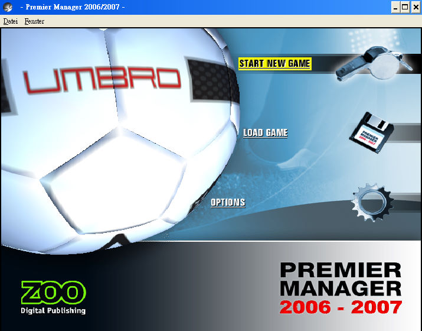
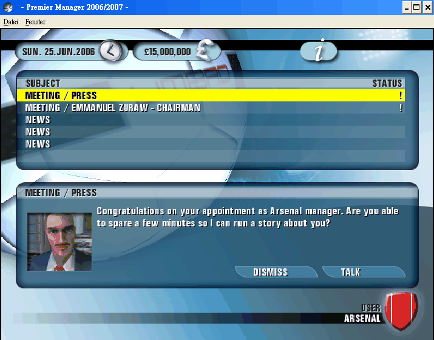

名稱：第一足球經理2006-2007 (Premier Manager 2006-2007，英文版) 簡介：Zoo Digital 2006年出品的足球團隊經營管理模擬遊戲 [待補]。

保護：無 備註：VirtualBox執行時若會錯誤跳出，請換回原始純淨的Windows版本。 備註：VirtualBox執行時不可做出更新視窗的動作，否則會造成視窗全黑，虛擬機建議使用 VMware。 備註：遊戲執行後可能無法結束，請調出工作管理員直接將之結束。